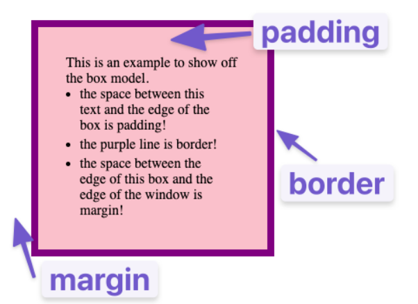

This page focuses on positioning, which uses the box model
Width and height are also important elements of positioning!
This is a good example of a high padding, I even added colors to show the box of the p tag
This is an example of a border, there are many different variations
Below is an example of a margin
Notice that two margins collapse when they meet (like between 1 and 2, there is not 16, but only 8rem margin) The largest margin will be applied. Margin also doesnt add up to the sizing of an element. If we give a width to an element, its goig to be the content's width. Padding and border sizes Add up to it. (For example a #paddingexample takes up 18rem even if the widht is 10rem)
The example below shows a method to incude the size of padding and border into the width/height
There is also margin-left, margin-top, margin-right and margin-bottom to separately control every margin. The same is true to border and padding. You can also control only the width, style or color of the border
You can also use shorthands for margins (see CSS here)